北京天行探索科技有限公司
欢迎使用天行探索 APP 及行者 Pro 卫星设备，本手册将引导您快速完成设备安装、APP安装、设备绑定及核心功能操作。
图 1 官方微信公众号二维码
打开 APP 后，首先展示《个人信息保护指引》，请仔细阅读《用户服务协议》《隐私政策》，点击【同意】进入下一步。如图2所示。
图 2 个人信息保护指引图示
进入登录界面后，新用户请先点击右上角完成用户注册；
注册用户支持 2 种使用方式：
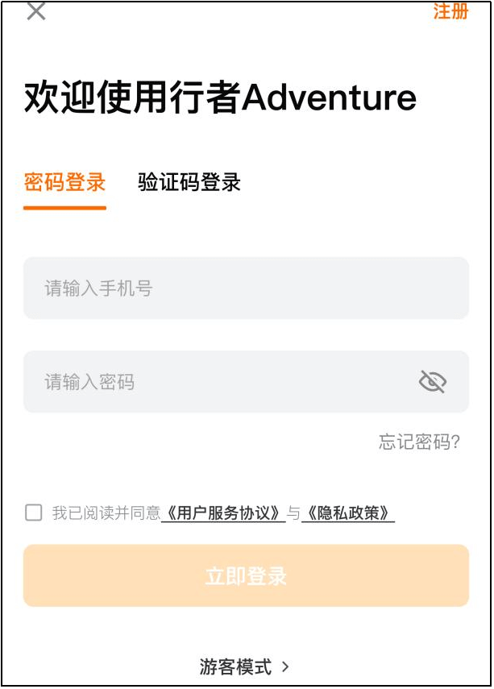
图 3 用户登录注册界面
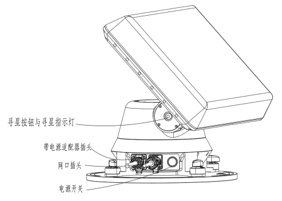
图 4 行者Pro插头、开关、按钮及指示灯位置图示
先将适配器24V直流端插头与设备电源口连接，然后将适配220V交流端插头与220V电源插座连接，最后打开设备电源开关，寻星指示灯黄色常亮表示设备上电成功，设备处于待机状态。设备电源口、电源开关、寻星指示灯位置如图4所示，电源适配器直流端、交流端插头如图5所示。
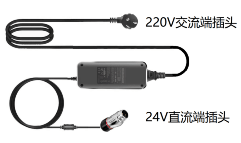
图 5 行者Pro适配器图示
绑定是使用设备功能的前提，需要先用手机连接设备的WIFI。
先退出 APP，在手机WIFI 设置中，连接行者 Pro 设备发射的专属 WIFI（名称通常为 “天行探索卫星地面站” 类标识，默认密码txts666888）。
然后进入APP，按图6所示步骤连接行者Pro设备：
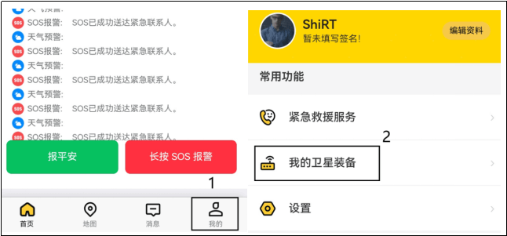
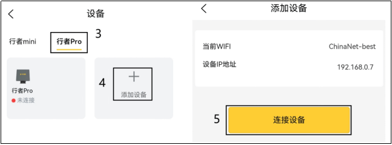
图 6 APP连接行者Pro设备指引
如果设备绑定失败，请检查设备是否开机、连接的WIFI是否正确、连接时的密码是否正确，并再次尝试绑定。
设备绑定成功后，点击设备详情跳转至【设备详情页】，如图7所示。或者绑定成功后，在图6界面点击已绑定的设备图标也可以进入设备详情页。
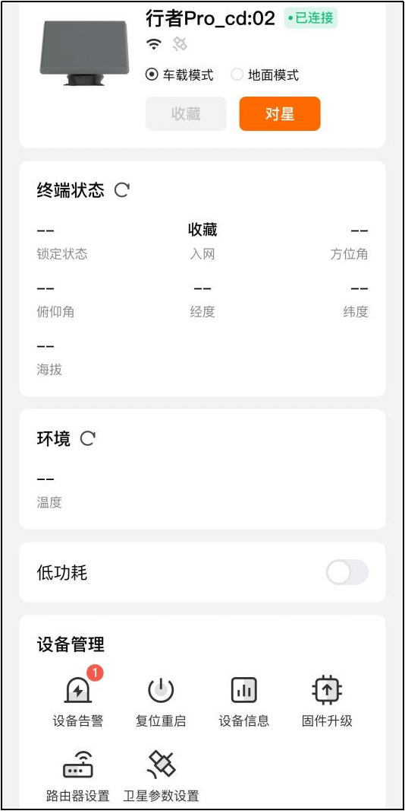
图 7 行者Pro设备详情图示
开箱、安装、对星等操作视频请参考公众号。
对星：点击后启动设备卫星对星流程，完成后可获取终端状态（锁定状态、经纬度等）；
在调试模式页面，支持如下操作：
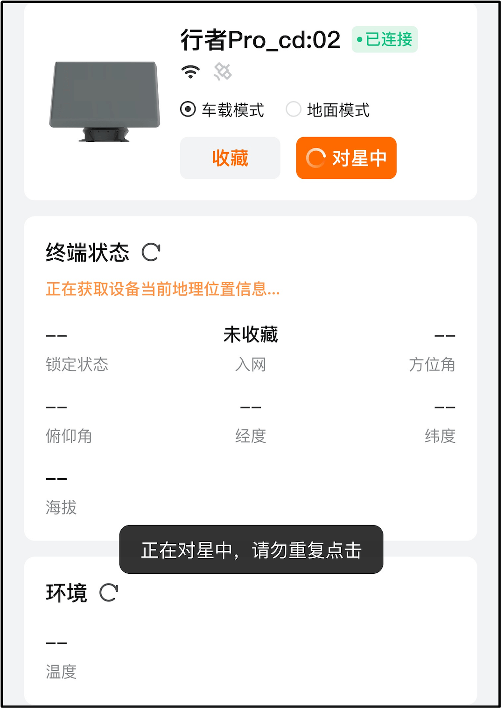
图 8 APP详情页行者Pro对星过程
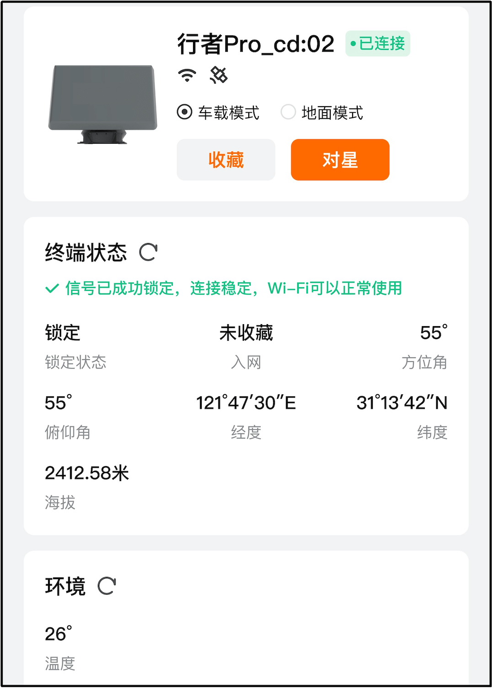
图 9 APP详情页行者Pro入网成功
点击详情界面的对星按钮后，会显示对星中，对星过程中，设备天线会不断旋转，自动寻找卫星信号良好的角度，整个过程耗时约1~3分钟，此时寻星指示灯会不断黄灯闪烁；完成对星后，设备天线进入与卫星联网过程，此时寻星指示灯会绿灯闪烁；设备天线完成与卫星联网后，此时指示灯呈绿色常亮。
【如果寻星旋转7圈未能对星成功，则设备会停止旋转。如果寻星过程中触发设备复位，则设备会自动收藏进入待机状态，恢复至初始状态，寻星指示灯呈黄灯常亮；此时需要观察周边是否有高大建筑遮挡等异常情况，可断电复位设备或移动至视野开阔无遮挡位置后再次尝试对星。】
对星成功之后，如图9所示，APP界面终端状态会显示“信号已成功锁定，连接稳定，Wi-Fi可以正常使用”，对星成功后设备天线面与底座有一定夹角，如图10所示，指示灯绿灯常亮。
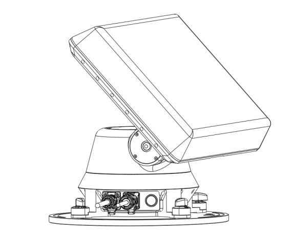
图 10 行者Pro设备入网成功姿态图示
如果没有下载APP，可以在设备上电后，轻按设备寻星按钮自动寻星（寻星按钮和指示灯为一体化设计），寻星过程及设备状态指示与APP寻星一致。寻星按钮位置如图6所示。
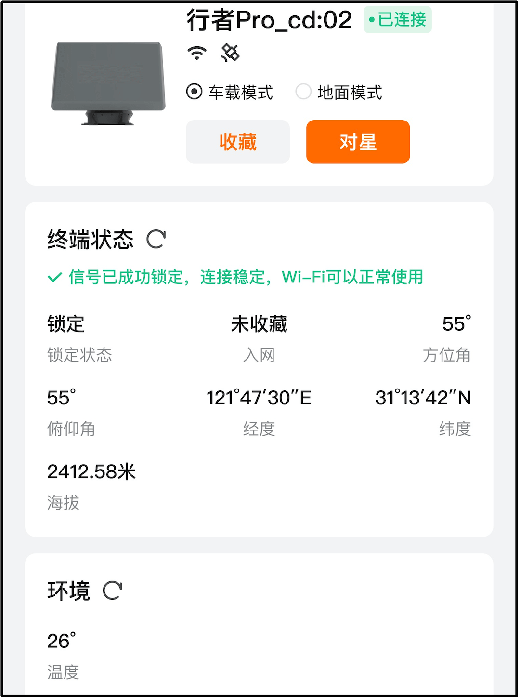
图 11 APP详情页行者Pro状态查询
点击终端状态栏右侧的刷新按钮，会查询当前终端的状态，包含：锁定状态、待机状态、方位角、俯仰角、经度、纬度。
点击环境栏右侧的刷新按钮，会查询终端当前的温度数据并显示。
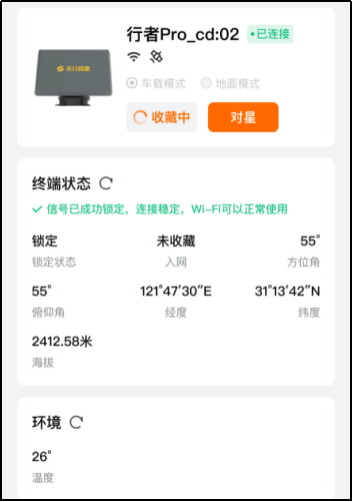
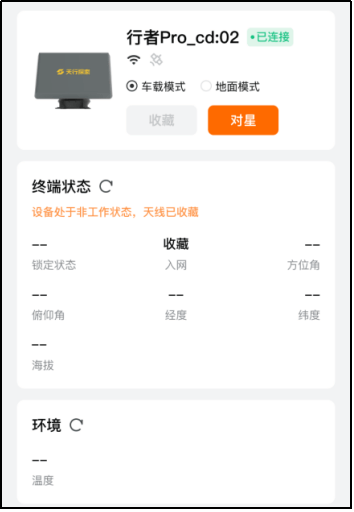
图 12 APP详情页行者Pro收藏成功
点击收藏按钮，天线会在约15秒钟内收藏至初始位置姿态，设备进入待机模式，但保留APP控制的必要电源。
如果没有APP，也可以在设备天线处于工作模式时，轻按寻星按钮，天线会在约15秒钟内收藏至初始位置姿态，设备进入待机模式，但保留APP控制的必要电源。寻星按钮位置如图6所示。此时寻星指示灯呈黄色常亮。
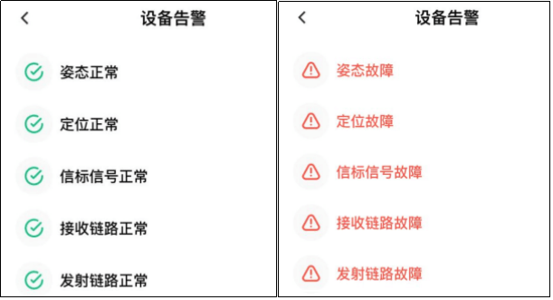
图 13 APP设备告警页面图示
点击设备详情的设备告警按钮，进入设备的告警详情页面，对设备关键功能状态进行指示，工作正常则显示绿色正常，有告警则显示红色功能故障。设备告警效果如图13所示。
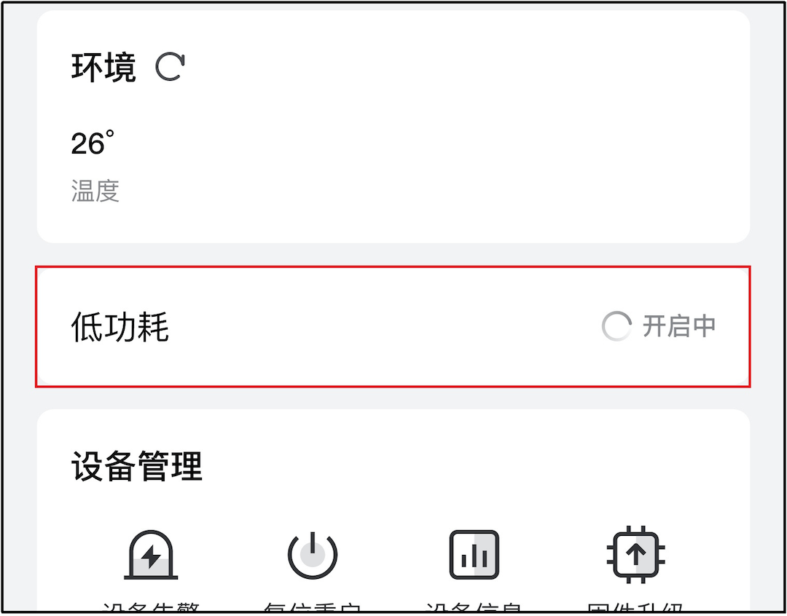
图 14 APP行者Pro低功耗开关图示
在APP的设备详情页，点击图14中间的低功耗开关，可以让设备进入/退出低功耗状态。进入低功耗状态后，此时设备状态变为：姿态保持不变、天线收发处于关闭状态，方位和俯仰伺服器模组处于静默模式，但此时能正常接收APP的控制指令。
也可以长按寻星按钮3s，系统会进入低功耗状态；再次长按3s会解除低功耗模式。
如图14所示，点击下方的路由器设置，进入设备的WIFI路由管理界面（路由器登录默认用户名admin，默认密码admin，配置地址一般为：192.168.10.1），进行WIFI密码修改，如图15所示。
进入页面：高级设置-2.4GHz无线，查看手机连接的WIFI名称是否为图中的无线名称，更改【WPA预共享密钥】后，点击下方按钮【应用设置】即可。
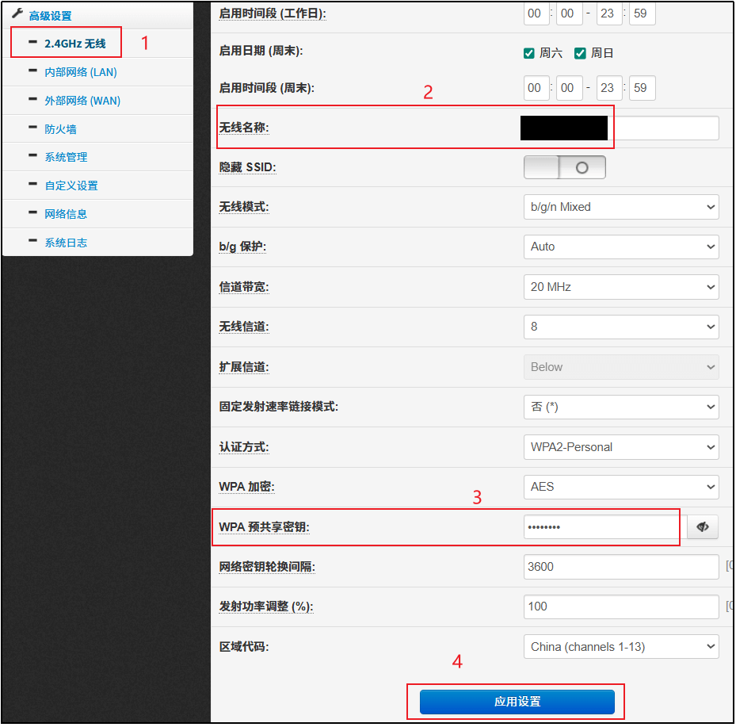
图 15 更改WIFI密码
如图14所示，点击下方的卫星参数设置，进入设备的基带管理界面，进行基带修改。
备注：此项功能需在我司专业人员指导下使用。
Q：搜索不到设备WIFI怎么办？
A：参考图4，确认设备电源开关已打开，若电源已打开，则关闭开关再打开，重启设备，然后等待1-2分钟，设备启动成功后，再尝试搜索设备WIFI。
Q：WIFI密码忘记怎么办？
A：设备WIFI密码是使用本设备的重要凭据，请务必小心记录保存。如果确实忘记密码，请联系我司技术支持，指导解决。
Q：设备绑定失败怎么办？
A：参考图6提示，先在手机 WIFI 设置中确认已连接行者 Pro 的设备 WIFI，再返回 APP 重新点击【开始绑定】。
Q：是否可以通过设备网口连接互联网？
A：设备对星成功入网后，可以通过设备网口连接互联网，如果使用外置路由器，也可以将设备网口与外置路由器wan口连接。
Q：设备寻星过程中连续旋转超过7圈不停转怎么办？
A：关闭电源开关再打开，重启设备后尝试再次对星。
Q：设备意外断电，没有恢复至收藏状态怎么办？
A：先正确连接电源适配器插头，再打开电源开关，然后轻按寻星按钮开始寻星，再次轻按寻星按钮收藏设备，待设备完成收藏后，关闭电源开关。
如果设备安装在车顶，请将设备及时拆放至车内平稳放置，防止意外抖动、碰撞损坏设备；如果设备安放在三脚架/平地，请及时将设备收纳妥当，待电力恢复后，再进行收藏操作。
Q：设备成功对星，但访问不了互联网怎么办？
A：请确认设备是否欠费没有流量，如果流量还有余额，联系我司技术支持指导解决。
Q：设备入网成功，但网速很慢怎么办？
A：请确认设备是否欠费限流，如果没有限流，请观察设备四周是否有障碍物遮挡设备正前方，如果有，建议移动设备至空旷无遮挡地点使用。